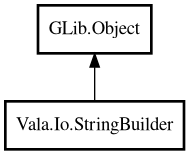

StringBuilder
Object Hierarchy:

Description:
public class StringBuilder : Object
StringBuilder is a mutable string buffer for efficient string construction. It wraps GLib.StringBuilder and provides a rich, Java/C#-
inspired API.
Unlike regular string concatenation which creates a new string each time, StringBuilder modifies an internal buffer, making it much more
efficient for building strings incrementally.
Example:
var sb = new StringBuilder ();
sb.append ("Hello");
sb.append (", ");
sb.append ("World!");
assert (sb.toString () == "Hello, World!");
Content:
Creation methods:
Methods:
- public StringBuilder append (string s)
Appends a string to the end of this builder.
- public StringBuilder appendChar (char c)
Appends a single character to the end of this builder.
- public StringBuilder appendLine (string s)
Appends a string followed by a newline character.
- public int capacity ()
Returns the allocated buffer capacity in bytes.
- public char charAt (int index)
Returns the character at the specified byte index.
- public StringBuilder clear ()
Clears the contents of this builder.
- public StringBuilder deleteRange (int start, int end)
Deletes the characters in the range [start, end).
- public StringBuilder insert (int offset, string s)
Inserts a string at the specified byte offset.
- public int length ()
Returns the number of bytes in this builder.
- public StringBuilder replaceRange (int start, int end, string s)
Replaces the characters in the range [start, end) with the given
string.
- public StringBuilder reverse ()
Reverses the contents of this builder.
- public string toString ()
Returns the string representation of this builder.
Inherited Members:
All known members inherited from class GLib.Object
- @get
- @new
- @ref
- @set
- add_toggle_ref
- add_weak_pointer
- bind_property
- connect
- constructed
- disconnect
- dispose
- dup_data
- dup_qdata
- force_floating
- freeze_notify
- get_class
- get_data
- get_property
- get_qdata
- get_type
- getv
- interface_find_property
- interface_install_property
- interface_list_properties
- is_floating
- new_valist
- new_with_properties
- newv
- notify
- notify_property
- ref_count
- ref_sink
- remove_toggle_ref
- remove_weak_pointer
- replace_data
- replace_qdata
- set_data
- set_data_full
- set_property
- set_qdata
- set_qdata_full
- set_valist
- setv
- steal_data
- steal_qdata
- thaw_notify
- unref
- watch_closure
- weak_ref
- weak_unref